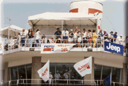

The Pit Tower seating is directly on top of the Dodge Pit Tower. In the first two photos, it is the larger white tent at the top and front center of Pit Tower. From here there is a fantastic view of the race course, along with a complete birds-eye view of the pit action.

![[Pit Tower Photo]](pittwr2.gif)
![[Pit Tower Photo]](pittwr3.gif)
Because there are only 40 seats available in this area, they are sometimes sold out weeks in advance. Priced at $225 each, these passes include a Sunday catered lunch and a race program. If you prefer to arrange your own lunch, these seats are available for $200 each.
A free Gold Cup Pit Pass is included with every ticket.
For parking information, see the Dodge Pits Parking - Race Days info.
 Return to the Ticket Info page.
Return to the Ticket Info page.
All contents Copyright © 1997 Spirit of Detroit THUNDERFEST, except where noted.
Web page created by Brian Reed.
 Return to the Top THUNDERFEST page.
Return to the Top THUNDERFEST page.
All Rights Reserved.